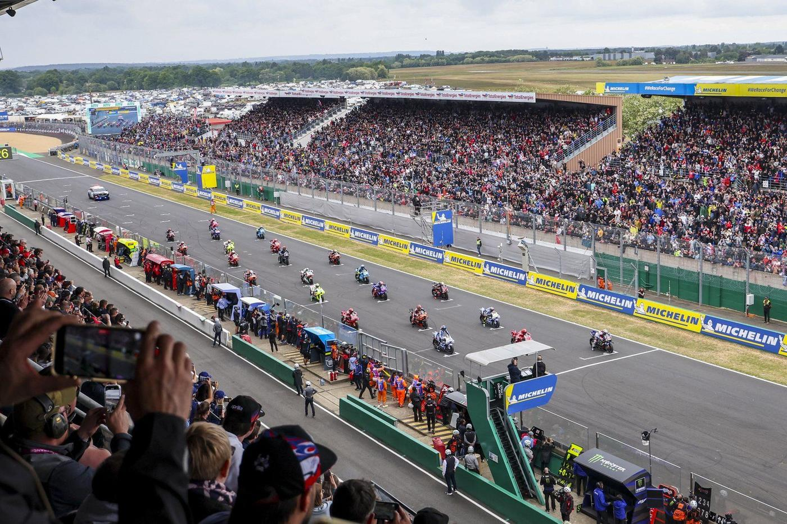

Sports · Motorsport
MotoGP Grand Prix de France 2027
- Dates
- –
- Venue
- Circuit Bugatti, Le Mans
- Location
- Le Mans, France
- Format
- In-person
- Category
- Motorsport
- Industry
- Motorsport
- Organiser
- Dorna Sports / Fédération Internationale de Motocyclisme
- Official website
- https://www.motogp.com/en/calendar/2027
About
Dates are local civil dates for the official Grand Prix weekend in France.
Topics: MotoGP, Grand Prix, motorcycle racing.
No organiser attendance figure found on the official pages fetched 24 Nov 2026 for this upcoming edition. Ranked by our estimated size tier 'large' (30,000-100,000 attendees/visits), a judgement from format, venue and scale, not an official number.